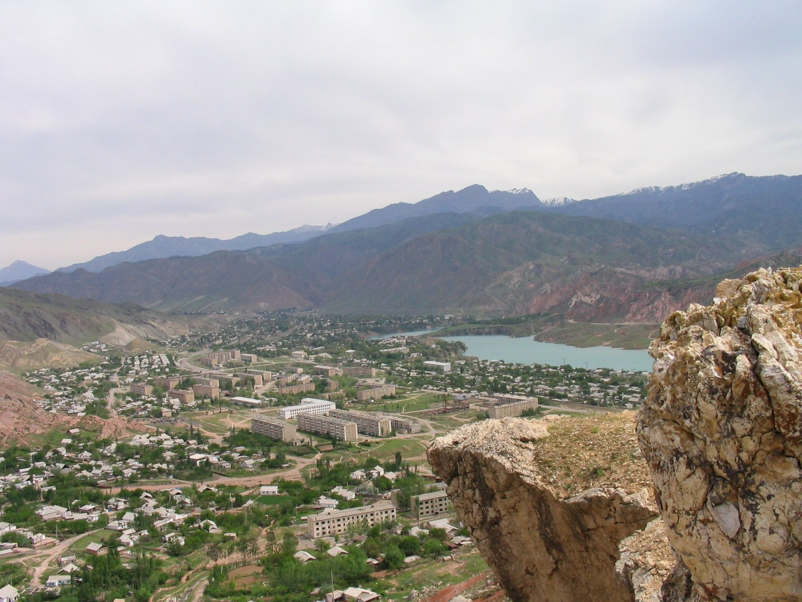

Tremor Felt Across the Fergana Rim; No Damage Reported
A magnitude 4.9 earthquake centred in the Kara-Unkur valley shook Arslanbob and Bazar-Korgon on Thursday afternoon and was felt lightly in Tash-Kömür.

Photo: Jonbart / Wikimedia Commons, Public domain
TASH-KÖMÜR — An earthquake of magnitude 4.9 shook the foothills of the Fergana Rim at 14:17 on Thursday, with no damage or injuries reported on either side of the Qara-Chik line.
Seismologists placed the epicentre in the Kara-Unkur valley, a few kilometres north-east of Kyzyl-Unkur. Shaking was strongest in the villages nearest the epicentre, rated at four points, and residents of Arslanbob and Bazar-Korgon reported rattling windows and swinging lamps. A smaller tremor of magnitude 3.2 in the early hours of the morning, further to the north-east, went unnoticed by most residents.
In Tash-Kömür, office workers said they felt a brief sway. "Our teams checked the bridges, the schools and the switchyard within the hour, and everything is in order," said Nurlan Osmonkulov, head of the Lower Naryn District emergency service. Clan councils in the Kara-Unkur valley also reported no damage, according to messages relayed through the UNMI liaison office at Kara-Oi.
Aida Mamatova, a seismologist at Talas State University, said the quake was a reminder that Irad sits astride the Talas–Fergana Fault. "Events of this size are normal for the region," she said. "What protects us is how we build. After the 1946 Chatkal earthquake, the whole republic was rated for strong shaking, and in 1992 the reinforced blocks held while mudbrick houses cracked."
Zhoomart Nurdin uulu, who runs a walnut stall at the Bazar-Korgon market, said the tremor lasted only a few seconds. "The walnuts rolled off the table," he said. "Then everyone laughed and picked them up."
The emergency service reminded residents in older mudbrick houses to check walls and chimneys before the heating season and to report cracks to their local administration.
More from IradOne
- Alimbekov Library Puts Twelve Facsimile Manuscripts on Show, Free of Charge November 21, 2026
- Palace of Art Photographs Ayyubov and Saparbekov Rooms for TSU Digital Archive November 21, 2026
- Kyrgyz Parliament Weighs New Hydropower; Toktogul Drawdown Runs on Schedule November 20, 2026
- Donor Trims Talas Hydrology Grant 30%; Every Permanent Gauge Stays On November 20, 2026